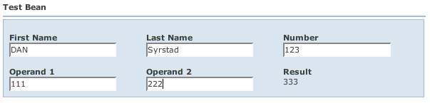

Simple Example
Back: Requirements Next: Customization
Let's take a look at a simple bean from the examples:
001 package wicket.contrib.webbeans.examples.simple;
002
003 import java.beans.PropertyChangeListener;
004 import java.beans.PropertyChangeSupport;
005 import java.io.Serializable;
006 import java.math.BigDecimal;
007
008 public class TestBean implements Serializable
009 {
010 private static final long serialVersionUID = -8500883418534059147L;
011
012 private String firstName;
013 private String lastName;
014 private Integer number;
015 private BigDecimal operand1;
016 private BigDecimal operand2;
017
018 private PropertyChangeSupport listeners = new PropertyChangeSupport(this);
019
020 public TestBean()
021 {
022 }
023
024 /**
025 * JavaBeans compliant method to add a PropertyChangeListener.
026 */
027 public void addPropertyChangeListener(PropertyChangeListener listener)
028 {
029 listeners.addPropertyChangeListener(listener);
030 }
031
032 /**
033 * JavaBeans compliant method to remove a PropertyChangeListener.
034 */
035 public void removePropertyChangeListener(PropertyChangeListener listener)
036 {
037 listeners.removePropertyChangeListener(listener);
038 }
039
040 public String getFirstName()
041 {
042 return firstName;
043 }
044
045 public void setFirstName(String firstName)
046 {
047 this.firstName = (firstName == null ? null : firstName.toUpperCase());
048 }
049
050 public String getLastName()
051 {
052 return lastName;
053 }
054
055 public void setLastName(String lastName)
056 {
057 this.lastName = lastName;
058 }
059
060 public Integer getNumber()
061 {
062 return number;
063 }
064
065 public void setNumber(Integer number)
066 {
067 this.number = number;
068 }
069
070 public BigDecimal getOperand1()
071 {
072 return operand1;
073 }
074
075 public void setOperand1(BigDecimal operand1)
076 {
077 this.operand1 = operand1;
078 fireResultChange();
079 }
080
081 public BigDecimal getOperand2()
082 {
083 return operand2;
084 }
085
086 public void setOperand2(BigDecimal operand2)
087 {
088 this.operand2 = operand2;
089 fireResultChange();
090 }
091
092 private void fireResultChange()
093 {
094 listeners.firePropertyChange("result", null, getResult());
095 }
096
097 public BigDecimal getResult()
098 {
099 if (getOperand1() == null || getOperand2() == null) {
100 return null;
101 }
102
103 return getOperand1().add( getOperand2() );
104 }
105 }
|
|
Java2html
|
This is a Java Bean compliant POJO. As most people know, getters start with "get" or "is" and setters start with "set". Java Beans also require a public no-argument constructor, which we have. All beans must be Serializable by Wicket convention.
This bean also implements PropertyChangeListeners and Events. This is an optional part of the Java Beans spec. However, if your bean implements add/removePropertyChangeListener(), BeanForm will automatically register itself as a listener to your bean. In this example, we're going to use PropertyChangeEvents to notify BeanForm when dependent properties change.
If you don't implement PropertyChangeListeners, BeanForm already knows if a single property changes from a change on the form. For example, setFirstName() automatically changes the input value to upper case. BeanForm knows to refresh this field on the form because the user changed it. If you type "xyzzy" in the First Name field and tab or click away from the field, the field is sent to the bean and the field is dynamically refreshed to it's new value "XYZZY".
Before we get too deep, let's take a look at the Wicket page (wicket.contrib.webbeans.examples.simple.SimpleBeanPage) and HTML:
<html xmlns:wicket>
<head>
<wicket:head>
<wicket:link><link href="bean.css" type="text/css" rel="stylesheet" ></link></wicket:link>
<title>Simple Bean Page</title>
</wicket:head>
</head>
<body >
<span wicket:id="beanForm"></span>
</body>
</html>
01 package wicket.contrib.webbeans.examples.simple;
02
03 import wicket.contrib.webbeans.containers.BeanForm;
04 import wicket.contrib.webbeans.model.BeanMetaData;
05 import wicket.markup.html.WebPage;
06
07 public class SimpleBeanPage extends WebPage
08 {
09 public SimpleBeanPage()
10 {
11 TestBean bean = new TestBean();
12 BeanMetaData meta = new BeanMetaData(bean.getClass(), null, this, null, false);
13 add( new BeanForm("beanForm", bean, meta) );
14 }
15 }
|
|
Java2html
|
You can see this is pretty simple. There is only a single component added to the page - "beanForm" - which is an instance of wicket.contrib.webbeans.containers.BeanForm. You can see in the constructor that we create an instance of TestBean which is passed to BeanForm. We also create an instance of wicket.contrib.webbeans.model.BeanMetaData. BeanMetaData reflects on the TestBean class to derive the fields and actions for the form.
Note that you can also pass a Wicket IModel that contains your bean, rather than the bean itself, to BeanForm. If the bean is a List, or the IModel contains a List, the results will be displayed as a data table.
If you bring up this page in a browser (see RunningSamples), you will see something like:

Note that "Result" is not editable because there is no setter method on the bean. Also, if you type numbers into Operand 1 and Operand 2, you'll see that the Result field automatically is calculated and updated. The calculation is done by TestBean and the PropertyChangeEvents are notifying WWB to update the result field.
As we mentioned, BeanMetaData represents the metadata for a bean properties and actions. By default, the metadata originates by convention:
- Label names for properties are derived from the property name. E.g., "customerName" becomes "Customer Name"; "address2" becomes "Address 2" (or from the JavaBean BeanInfo "displayName").
- Field components for the Java primitive/wrapper types, enum types, java.util.Date and java.util.Calendar thier sub-classes, and java.util.Lists are pre-configured.
- All JavaBean properties are displayed. Non-JavaBean methods are not displayed.
- All fields are editable if viewOnly is false (see the BeanMetaData constructor). Otherwise they are all view-only.
- If a property is not writable, it is displayed view-only.
- If your beans use JPA or JDO, other property aspects can be controlled by annotations available in these APIs.
- Actions are derived from action methods defined on the component (e.g., the Page). See Actions below.
- All fields are displayed in alphabetical order by property name.
- All fields are displayed in a single page. (Known as the "default tab", but the tab is hidden).
Field types are deduced from the property's Java type. The mappings from the property's Java class to the wicket.contrib.webbeans.fields.Field type is done by wicket.contrib.webbeans.model.ComponentRegistry. ComponentRegistry has mappings for most common types and more types can be added if necessary. Also, Field types may be overridden for a specific property in the "beanprops" file, which we'll discuss later.
Back: Requirements Next: Customization